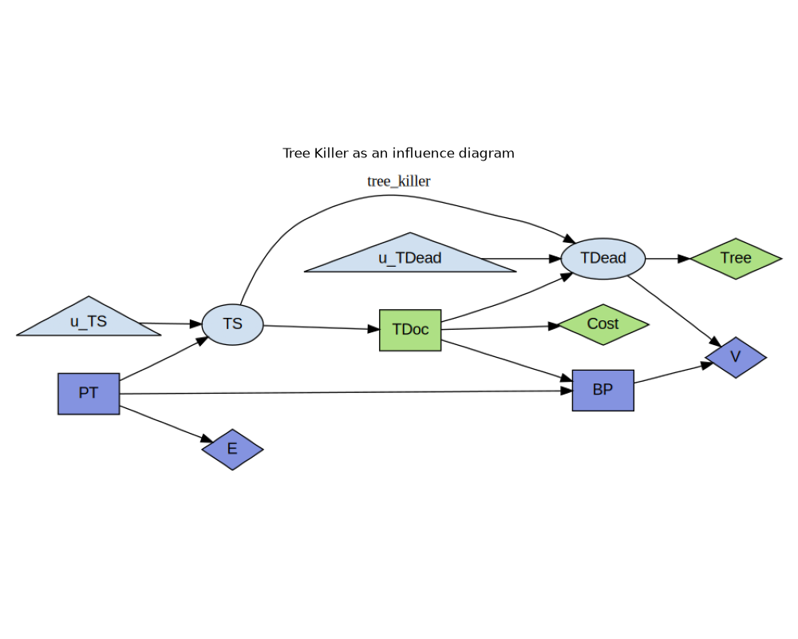
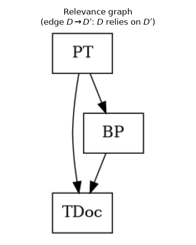
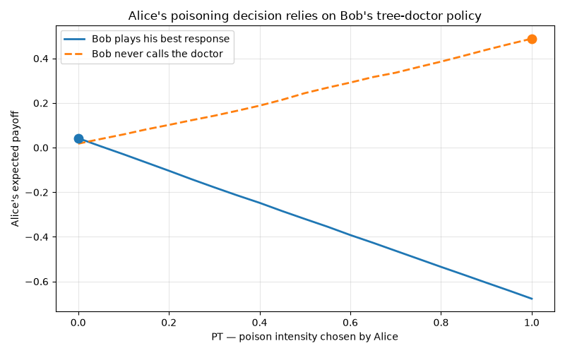
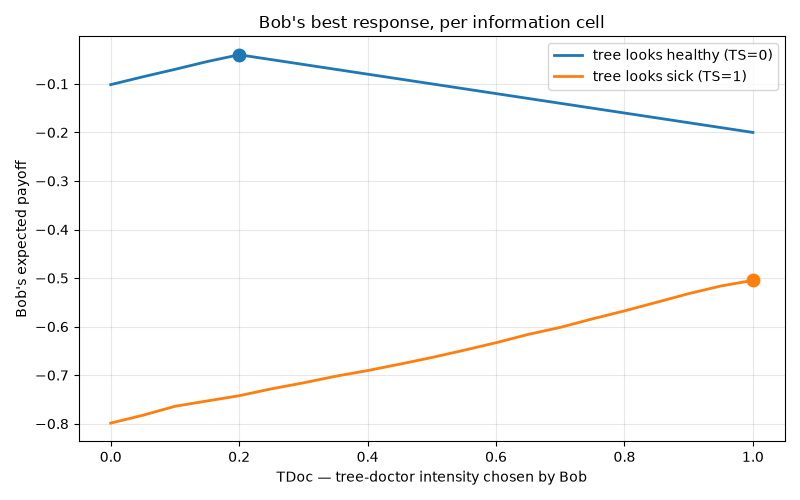

Note
Go to the end to download the full example code.
Strategic Relevance: Solving the Tree Killer¶
Some games decompose: their decisions break into smaller problems that can be solved in sequence, each taking as settled the ones before it. Others do not, and their decisions have to be faced together, as a single equilibrium problem.
What settles which – and where a decomposition’s dividing lines fall – is whether the decisions strategically rely on one another: whether optimising one of them requires knowing how another is played. That relation depends on a game’s payoffs, but it is bounded from above by a purely graphical criterion, Koller & Milch’s s-reachability, read off the structure of the model alone: no payoff values, no solving. Where the criterion finds no reliance, there is none.
This example takes the Tree Killer game of Koller & Milch (2001) [1], encoded as a scikit-agent block, and
computes which decisions strategically rely on which others,
reads a solution order off the resulting relevance graph, and
solves the game in that order, one decision at a time,
then checks numerically that the relevance graph told the truth: a decision’s best response is unchanged by the policies it does not rely on, and changes when a policy it does rely on changes.
The Game¶
Alice and Bob are neighbours, and between them stands Bob’s tree. Alice would
like to build a patio, but the tree spoils the view she would have from it, so
she first considers poisoning it (PT). The poison costs her something
whether or not it works, and it works only probabilistically: a poisoned tree is
more likely to fall sick (TS).
Bob sees the tree every day, so he notices when it looks sick. He does not see
whether Alice poisoned it – he observes the symptom, not the cause – and on
that basis alone he decides whether to pay a tree doctor (TDoc). The fee is
his to bear, and the treatment makes the tree less likely to die (TDead).
Alice then decides whether to build the patio (BP). She knows what she did
with the poison, and she has watched whether Bob called the doctor, but she
cannot see the future: she must commit to the construction cost before the tree’s
fate is settled, and the patio is only worth building if the view ends up clear
– which is to say, only if the tree ends up dead.
The two of them want different things. Alice pays for the poison (E) and
enjoys or regrets the patio (V); Bob wants his tree to live (Tree) and
would rather not pay a doctor (Cost). Each one’s payoff is the sum of the two
utilities they own.
References¶
import io
import matplotlib.image as mpimg
import matplotlib.pyplot as plt
import numpy as np
from skagent.algos.best_response import TabularBestResponseSolver
from skagent.algos.vfi import get_action_rule
from skagent.models.macid import tree_killer_block as block
Representing This as a MACID¶
In a multi-agent causal influence diagram (a MACID, or a MAID in Koller &
Milch’s original terminology) the story above becomes a directed graph over
three kinds of node. PT, TDoc and BP are decision nodes, each
attributed to the agent who controls it. TS and TDead are chance
nodes. E, V, Tree and Cost are utility nodes, each owned by
an agent, and an agent’s payoff is the sum of the utility nodes they own – an
additively decomposed utility.
The chance nodes are written in structural-causal form rather than as the
conditional probability tables of the original presentation: each is a
deterministic mechanism of its parents plus an explicit exogenous noise
variable (the shocks u_TS and u_TDead). This is equivalent in
distribution and makes the noise a node like any other. Here are the block’s
dynamics, in topological order:
block.display_formulas()
PT = Control()
TS = lambda PT, u_TS: (u_TS < 0.1 + 0.7 * PT) * 1.0
TDoc = Control(TS)
TDead = lambda TS, TDoc, u_TDead: (u_TDead < 0.1 + 0.7 * TS - 0.5 * TDoc
BP = Control(PT, TDoc)
E = lambda PT: -PT
V = lambda TDead, BP: BP * (3.0 * TDead - 0.5
Tree = lambda TDead: -TDead
Cost = lambda TDoc: -0.2 * TDoc
Agent attribution is declared on the Control itself, for decisions, and in
the block’s reward mapping, for utilities:
decisions = block.get_controls()
for sym, control in decisions.items():
print(f"decision {sym:5s} agent {control.agent:6s} observes {control.iset}")
for sym, agent in block.reward.items():
print(f"utility {sym:5s} agent {agent}")
decision PT agent alice observes []
decision TDoc agent bob observes ['TS']
decision BP agent alice observes ['PT', 'TDoc']
utility E agent alice
utility V agent alice
utility Tree agent bob
utility Cost agent bob
What makes the graph a game rather than a causal model is that a decision
node’s parents are its information set – what the decision-maker observes
at the moment of choosing – and not everything that causally precedes it. The
distinction carries the whole story here. PT causally precedes TDoc,
through TS, yet Bob’s only parent is TS: he acts on the symptom, in
ignorance of the poison. Alice’s BP, by contrast, has both PT and
TDoc as parents. Had TDoc been given PT as a parent too, it would
be a different game over the same causal structure.
img, _ = block.display({})
plt.figure(figsize=(10, 8))
plt.imshow(img)
plt.axis("off")
plt.title("Tree Killer as an influence diagram")
plt.tight_layout()

<IPython.core.display.SVG object>
Strategic Relevance¶
Decision \(D\) strategically relies on decision \(D'\) when the decision rule at \(D'\) is one you need to know in order to optimise \(D\); equivalently, in Koller & Milch’s other phrasing, \(D'\) is strategically relevant to \(D\). Note that the two phrasings point in opposite directions.
Relevance so defined is a numeric property – it depends on the actual probabilities and payoffs. What makes it tractable is s-reachability, a purely graphical criterion: \(D'\) is s-reachable from \(D\) iff, after adding a fresh dummy parent to \(D'\), that dummy is d-connected to some utility node owned by \(D\)’s agent and descended from \(D\), conditional on \(D\) and its information set. Genuine relevance always implies s-reachability, so the criterion misses nothing; in the other direction it is as tight as a structural test can be – an s-reachable pair is one that genuinely relies for some assignment of probabilities and payoffs to this graph, though not necessarily for the numbers in this particular block.
relies_on computes that criterion, and answers the pairwise question
directly:
PT relies on TDoc
PT relies on BP
TDoc ignores PT
TDoc ignores BP
BP ignores PT
BP relies on TDoc
Reading the table: Bob’s TDoc relies on nothing – his optimal response to
a sick tree does not depend on how Alice plays. Alice’s BP relies on
TDoc (whether the doctor was called changes how likely the view is to
clear) but not on PT, even though it observes PT: observing a
variable is not the same as relying on the policy that sets it. And PT
relies on both of the others.
The relevance graph collects those verdicts into one directed graph over
the decisions, with \(D \rightarrow D'\) meaning “\(D\) relies on
\(D'\)”. Its shape dictates how the game can be solved. If it is acyclic,
the decisions can be taken one at a time, in an order where everything a
decision relies on is already settled – a generalisation of backward
induction. If it has a cycle, the decisions in that cycle must be solved
jointly, as a simultaneous-move equilibrium problem.
condensation() reports both at once: the strongly connected components, in
solution order.
relevance = block.relevance_graph()
print("relevance edges:", relevance.edges())
print("acyclic:", relevance.is_acyclic())
print("solution order:", relevance.condensation())
relevance edges: [('PT', 'TDoc'), ('PT', 'BP'), ('BP', 'TDoc')]
acyclic: True
solution order: [{'TDoc'}, {'BP'}, {'PT'}]
The relevance graph is acyclic, so the game decomposes: each component in the
condensation() order relies only on components already solved.
dot = relevance.draw()
plt.figure(figsize=(4, 5))
plt.imshow(mpimg.imread(io.BytesIO(dot.create_png()), format="png"))
plt.axis("off")
plt.title("Relevance graph\n(edge $D \\rightarrow D'$: $D$ relies on $D'$)")
plt.tight_layout()

Solving in Relevance Order¶
TabularBestResponseSolver solves a block this
way round: solve() walks the relevance graph’s condensation() and
computes each decision’s best response against the rules already found. No
iteration to a fixed point is needed, because the graph is acyclic – every
rule a decision relies on is settled by the time its turn comes. Had a
component held more than one decision, the solver would refuse it as the
simultaneous-move equilibrium problem it is.
What it does for each decision:
searches a grid of candidate actions, here the
[0, 1]intensities that this encoding relaxes the game’s binary decisions to;estimates expected payoffs by simulating the block’s shocks, reusing the same draws for every candidate action, so that comparisons between actions carry much less error than their levels do;
maximises per information cell: separately for each value of what the decision-maker observes, conditional on that observation. Conditioning groups the simulated samples, which makes the beliefs those the rest of the profile implies – when
BPsees Bob call the doctor, it infers the tree was sick;maximises the payoff of the agent who owns the decision: the sum of that agent’s utility nodes;
holds the decisions not yet solved at a full-support mixed rule, so that every information cell is reached and every conditional expectation is defined.
PT: 1 information cell(s), e.g. {(): 0.0}
TDoc: 2 information cell(s), e.g. {(np.float64(0.0),): 0.2, (np.float64(1.0),): 1.0}
BP: 42 information cell(s), e.g. {(np.float64(0.0), np.float64(0.2)): 0.0, (np.float64(0.0), np.float64(1.0)): 1.0, (np.float64(0.05), np.float64(0.2)): 0.0, (np.float64(0.05), np.float64(1.0)): 1.0}
The solution, decision by decision:
TDoc (Bob): call the doctor at full strength for a sick tree, and only slightly otherwise – just enough to rule out the small baseline chance of death, since beyond that the fee buys nothing.
BP (Alice): build the patio exactly when Bob called the doctor at full strength. That is an inference, not a preference: a doctor called in earnest reveals a sick tree, hence a decent chance of a clear view.
PT (Alice): do not poison. Bob’s response makes poisoning a bad deal.
Aggregate outcomes under the solved profile:
expected payoff, alice : 0.0422
expected payoff, bob : -0.0874
mean PT : 0.0000
mean TS : 0.1019
mean TDoc : 0.2815
mean TDead : 0.0311
mean BP : 0.1019
Checking the Relevance Graph Empirically¶
The graph made three structural claims. Each is now testable by re-solving a decision under a deliberately different profile.
Claim 1: TDoc relies on nothing. Bob’s best response should be identical whether Alice never poisons and never builds, or always does both.
for label, alice in [
("PT=0, BP=0", {"PT": get_action_rule(0.0), "BP": get_action_rule(0.0)}),
("PT=1, BP=1", {"PT": get_action_rule(1.0), "BP": get_action_rule(1.0)}),
]:
response = solver.best_response("TDoc", dict(policies, **alice))
print(f"TDoc best response under {label}: {response.to_dict()}")
TDoc best response under PT=0, BP=0: {(np.float64(0.0),): 0.2, (np.float64(1.0),): 1.0}
TDoc best response under PT=1, BP=1: {(np.float64(0.0),): 0.2, (np.float64(1.0),): 1.0}
Claim 2: BP does not rely on PT (though it observes it). Alice’s patio
rule should be unchanged when the policy generating PT is reweighted –
and, cell by cell, should not vary with the observed value of PT at all.
tables = {}
for label, weights in [
("uniform", None),
("skewed to PT=1", 1.0 + 3.0 * solver.actions),
]:
tables[label] = solver.best_response(
"BP", dict(policies, PT=solver.mixed_rule(weights))
).to_dict()
disagreements = {
cell: (tables["uniform"][cell], tables["skewed to PT=1"][cell])
for cell in tables["uniform"]
if tables["uniform"][cell] != tables["skewed to PT=1"][cell]
}
print(f"information cells compared: {len(tables['uniform'])}")
print(f"cells where the best response differs: {len(disagreements)} {disagreements}")
print("(observed PT, observed TDoc) -> BP, by observed TDoc:")
for tdoc in sorted({cell[1] for cell in tables["uniform"]}):
actions = {a for cell, a in tables["uniform"].items() if cell[1] == tdoc}
print(f" TDoc={tdoc:.2f}: BP={actions} for every observed PT")
information cells compared: 42
cells where the best response differs: 0 {}
(observed PT, observed TDoc) -> BP, by observed TDoc:
TDoc=0.20: BP={0.0} for every observed PT
TDoc=1.00: BP={1.0} for every observed PT
Claim 3: PT relies on TDoc. Replace Bob’s rule with a passive one that never calls the doctor, re-solve Alice’s patio rule against it, and her poisoning decision should move.
PT against Bob's solved rule : {(): 0.0}
PT against a passive Bob : {(): 1.0}
Poisoning is only worthwhile against a Bob who lets the tree die. This is the
content of the relevance edge PT -> TDoc, and the reason TDoc had to be
solved first.
solved_curve = solver.conditional_payoffs("PT", policies)
passive_curve = solver.conditional_payoffs("PT", passive)
plt.figure(figsize=(8, 5))
plt.plot(
solver.actions,
solved_curve.payoff[0],
linewidth=2,
label="Bob plays his best response",
)
plt.plot(
solver.actions,
passive_curve.payoff[0],
linewidth=2,
linestyle="--",
label="Bob never calls the doctor",
)
for curve, color in [(solved_curve, "C0"), (passive_curve, "C1")]:
best = solver.actions[curve.payoff[0].argmax()]
plt.plot(best, curve.payoff[0].max(), "o", color=color, markersize=9)
plt.xlabel("PT — poison intensity chosen by Alice")
plt.ylabel("Alice's expected payoff")
plt.title("Alice's poisoning decision relies on Bob's tree-doctor policy")
plt.legend()
plt.grid(True, alpha=0.3)
plt.tight_layout()

Bob’s side of the game, for comparison: his payoff as a function of the fee he
is willing to pay, conditional on what he observes. The two curves are the two
information cells of TDoc, and neither depends on anything Alice does.
tdoc_curve = solver.conditional_payoffs("TDoc", policies)
plt.figure(figsize=(8, 5))
for cell, payoff in zip(tdoc_curve.cells, tdoc_curve.payoff):
label = "tree looks sick (TS=1)" if cell[0] == 1.0 else "tree looks healthy (TS=0)"
(line,) = plt.plot(solver.actions, payoff, linewidth=2, label=label)
plt.plot(
solver.actions[payoff.argmax()],
payoff.max(),
"o",
color=line.get_color(),
markersize=9,
)
plt.xlabel("TDoc — tree-doctor intensity chosen by Bob")
plt.ylabel("Bob's expected payoff")
plt.title("Bob's best response, per information cell")
plt.legend()
plt.grid(True, alpha=0.3)
plt.tight_layout()
plt.show()

Total running time of the script: (0 minutes 6.042 seconds)